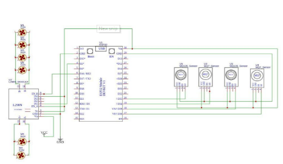
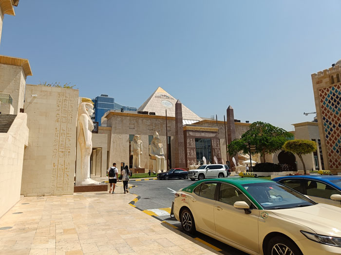

The interruption counter described here uses an infrared (IR) sensor
that can sense a
particular modulate frequency of IR beam.
A small transmitter circuit employing an IR led is
used to emit modulated signals.
When somebody crosses the path of the IR beam falling on thee sensor,
the triggering
circuit activates to trigger the monostable multivibrator
.The output of the monostable advances
the count of the 4-digit
counter-cum-display driver to display the count on 7-segment, common
cathode display.
images shows the circuit diagram for transmitters and receiver.
Timer NE 555
is wired as an astable multivibrator whose frequency is set to 36KHz by
adjusting preset VR1
.The npn transistor (T1) is used to drive IR LED1, which can transmit
modulated IR signal
up to 7 meters with out any lens arrangement
is one of the most crucial elements in the life of human beings
. In
today’s world, air pollution is rising at an alarming rate
because of which there
is climate change, and this has adverse consequences on everyone.
The air
around us is getting polluted because of the release of poisonous gases by
industries,
vehicle emissions which leads to an increase in the concentration of
harmful gases and
particulate matter in the atmosphere. The emission of various
toxic gases from industries and
vehicles is precarious for both the terrestrial
organism, as well as marine life.
Health problems like stroke, heart diseases,
lung cancer, respiratory diseases, etc
are arising due to poor air quality. Poor air
quality poses a significant risk to children,
asthmatics, pregnant women, as well
as elderly people
the design and implementation of an IoT based Air Quality Index
Monitoring
System that we have intended to develop using ESP 32
microcontroller. The
setup is going to show the air quality in PPM,
temperature, and humidity with
2
the help of various sensors and further,
it would be displayed on the IoT
Platform,Thing Speak.
The dashboard of the platform is to be set to public so
that everyone and anyone can keep
a track of the quality of air at the location
where the system would be installed.
In this way, we can monitor it very easily
by using our computer or mobile.
The motivation behind our project is to protect
our environment by curbing the release of
harmful gases emitted by industries,
vehicles, etc. We get to know about the quality of air on
a real-time basis and
hence necessary precautions can be taken immediately whenever needed
Vagmon is a beautiful place located to the south of India
with a unique climate which is not common in India
The place is one of the major tourist destinations in
Kerala. follow the link to Know more about this place
READ MORE
Dubai is the hub of global tourism and a wonder made by man.Its
a place with abundent resourses to explore and experience
Read more about Dubai on READ MORE

Ayyappancoil is a historic place
with, remainings from early inhabitants
and their culture. It is a destination that with
its unique features attracts travellers
READ MORE